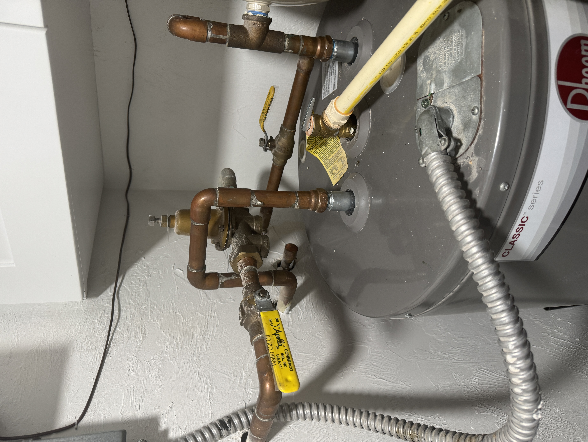
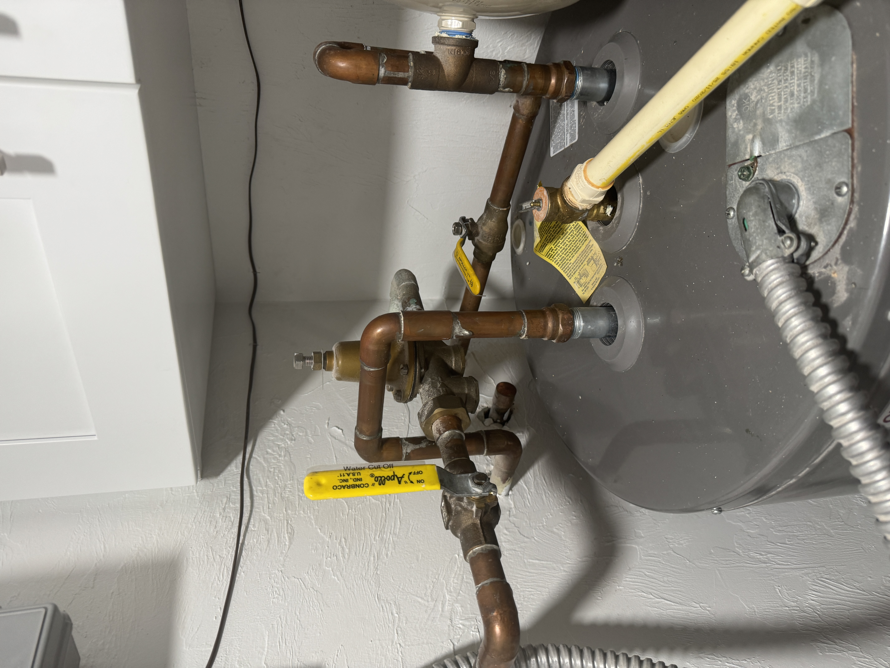
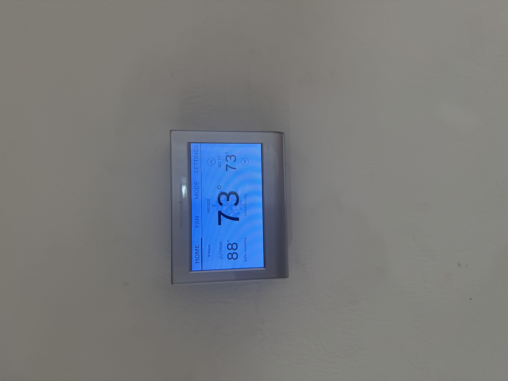

Extended Departure Checklist
Appliances & Utilities
-
Turn off ice makers:
Refrigerator Ice Maker
How to Turn Off the Ice Makers on This Samsung Refrigerator
- Locate the control panel on the refrigerator door (see photo for reference).
- Press and hold the "Door Alarm" button until you hear a beep. This unlocks the control panel.
- Press the "Ice Maker" button repeatedly until both "Cubed Ice On" and "Ice Bites On" lights turn off.
- Once both lights are off, the ice makers are now turned off.
- To turn the ice makers back on, repeat the same steps until the desired ice options light up again.
Under Counter Ice Maker
How to Turn Off the KitchenAid Undercounter Ice Maker
- Push on the top of the clear front panel to open the access door.
- Inside, locate the control panel (see photo for reference).
- Press the "On/Off" button until the light turns off.
- Close the access door.
- The ice maker is now turned off. To turn it back on, repeat the steps and press the On/Off button again.
-
Turn off the main water valve.
How to Turn Off the Water (Laundry Room by the Hot Water Heater)
- Locate the water shut-off valves in the laundry room by the hot water heater (see photos for reference).
- First photo: Valves are in the ON position (handles in line with the pipes).
- Second photo: Valves are in the OFF position (handles turned perpendicular to the pipes).
- To turn off the water, rotate each yellow handle 90 degrees so it is perpendicular to the pipe, as shown in the second photo.
- Confirm that all valves are turned so the handles are across the pipe, not in line with it.
- Once in the OFF position, water flow to the hot water heater is stopped. To turn the water back on, rotate the handles back so they are in line with the pipes.
 On Off -
Turn off the hot water heater.
How to Turn Off the Hot Water Heater
- Locate the Hot Water On/Off Switch in the laundry room by the hot water heater (see photo for reference).
- The up position is ON and the down position is OFF.
- To turn off the hot water heater, flip the switch to the DOWN position.
- To turn it back on, flip the switch to the UP position.
-
Set A/C to 74 degrees.
 - Turn off lights
- Run all ceiling fans
- Empty Fridge and Freezer
- Empty Dishwasher
Kitchen & Refrigerator
- Remove perishable food from the refrigerator and freezer.
- Empty the dishwasher.
- Open dishwasher and washing machine doors.
- Unplug small appliances (e.g., coffee maker, toaster, blender).
- Clean the microwave
- Run the food disposal for 30 seconds